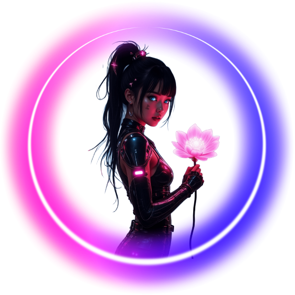

Цветы сакуры — символ весны и красоты в Японии. Они распускаются в конце марта или начале апреля, создавая удивительное зрелище, известное как ханами. Лепестки сакуры часто ассоциируются с быстротечностью жизни из-за их короткого периода цветения. Каждую весну тысячи людей собираются, чтобы полюбоваться этими нежными розовыми цветами.
